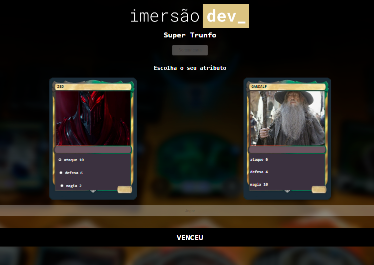

Rafael Chagas Correia Desenvolvedor Web FullStack
SuperTrunfo
Jogo SuperTrunfo com cartas diversificas de temas diversos.
Com JavaScript os elementos do HTML são acessados e alterados para criar e adicionar novas cartas ao baralho.
Assim que o usuário decide jogar, receberá uma carta aleatória e poderá escolher um atributo. O computador também recebe uma carta que fica oculta. Após o botão jogar ser apertado, a carta que tiver o atributo mais forte ganha.
Tecnologias ultilizadas:
- JavaScript
- HTML5
- CSS3